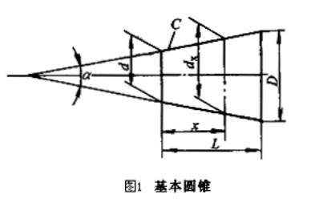
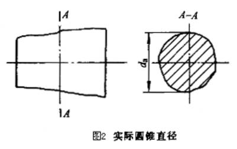
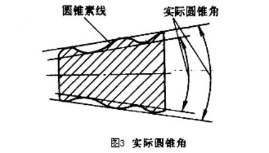
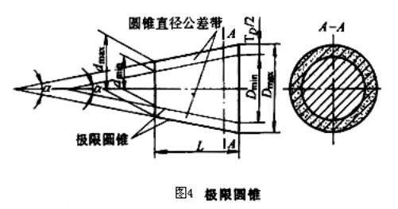
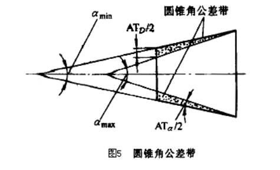
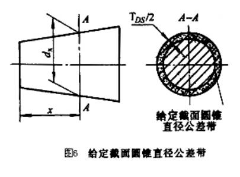

|
序号 |
术 语 |
定 义 |
|
1 |
基本圆锥 |
设计给定的圆锥（图1） 基本圆锥可用两种形式确定： 1）一个基本圆锥直径（最大圆锥直径D、最小圆锥直径d、给定截面圆锥直径dx）、基本圆锥长度L、基本圆锥角α或基本锥度C； 2）两个基本圆锥直径和基本圆锥长度L |
|
2 |
实际圆锥 |
实际存在而通过测量所得的圆锥 |
|
3 |
实际圆锥直径da |
在实际圆锥上测量得到的直径（图2） |
|
4 |
实际圆锥角 |
在实际圆锥的任一轴向截匾内：包容圆锥素线且距离为最小的两对平行直线之间的夹角（图3） |
|
5 |
极限圆锥 |
与基本圆锥共轴且圆锥角相等，直径分别为最大极限尺寸和最小极限尺寸的两个圆锥。在垂直于圆锥轴线的任一截面上，这两个圆锥的直径差都相等（图4） |
|
6 |
极限圆锥直径 |
垂直于极限圆锥轴线的截面上的直径。例如图4中的Dmax，Dmin，dmax，dmin |
|
7 |
极限圆锥角 |
允许的最大或最小的圆锥角（图5） |
|
8 |
圆锥直径公差TD |
圆锥直径的允许变动量（图4）。它适用于圆锥全长 |
|
9 |
圆锥公差带 |
两个极限圆锥所限定的区域。用示意图表示在轴向截面内的圆锥直径公差带时，如图4所示 |
|
10 |
圆锥角公差AT（AT。或ATD） |
圆锥角的允许变动量（图5） |
|
11 |
圆锥角公差带 |
两个极限圆锥角所限定的区域。用示意图表示圆锥角公差带时，如图5所示 |
|
12 |
给定截面圆锥直公差TDs |
在垂直圆锥轴线的给定截面内，圆锥直径的允许变动量（图6）。它仅适用于给定截面 |
|
13 |
给定截面圆锥直径公差带 |
在给定的圆锥截面内，由两个同心圆所限定的区域。用示意图表示给定截面圆锥直径公差带时，如图6所示 |





